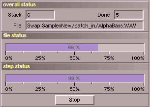

In this window the progress of the batch processing will be shown.
This happens in three areas. The upper one gives a main overview. The field
"Stack" tells how many files are in the queue. This number may raise during
the operation, if further subdirectories are found. The filed "Done" counts the
samples which have been processed and the field "File" informs about the
current sample. The two status bars below show the progress for the current file and
for the current operation.
The calculation can be stopped with one click at "Stop",
pressing the keys "S","s","ESC" or a click at the "Close"-gadget of the window.
|